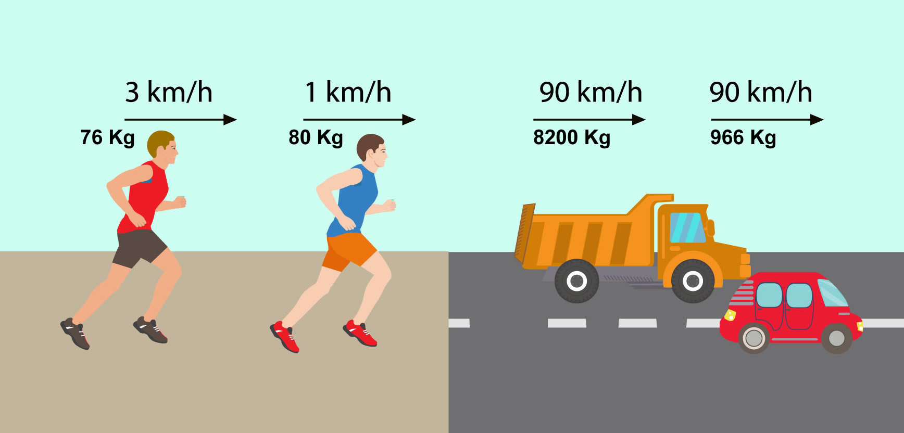

La energía cinética es aquella energía que posee un cuerpo o sistema debido a su movimiento. Se produce cuando un objeto, sustancia o partícula está en movimiento. Esta energía depende principalmente de la velocidad del objeto, además de su masa. Por ejemplo, cuando corremos, nuestro cuerpo está en movimiento, por lo que produce energía cinética.
La energía cinética está ligada a otros conceptos de la física como el trabajo y la fuerza. El objeto, al estar en movimiento, origina un trabajo y fuerza determinados.
Un objeto en movimiento puede regresar a su estado inicial o alcanzar un estado de reposo si actúa sobre él otra fuerza. El trabajo originado por la fuerza externa contrarresta la de la energía cinética del objeto.
La física la define como la cantidad de trabajo realizado por todas las fuerzas que actúan sobre un cuerpo con una masa determinada, necesario para acelerarlo desde una velocidad inicial hasta otra velocidad final.
Una vez alcanzada dicha velocidad, según la Ley de la inercia, la cantidad de energía cinética acumulada permanecerá constante, es decir, no variará, a menos que otra fuerza nuevamente actúe sobre el cuerpo, ejerciendo un trabajo sobre él, cambiando su velocidad y, por lo tanto, su energía cinética.
La energía cinética puede transferirse entre objetos y transformarse en otros tipos de energía. Por ejemplo, cuando un carro en movimiento choca con un carro inmóvil, parte de la energía cinética del carro en movimiento se transfiere al carro inmóvil, o se habrá transformado en otra forma de energía.
Normalmente la energía cinética se mide en Joules (J) en el Sistema Internacional de Unidades (SI). Aunque, esta también pueda expresarse con diferentes alternativas como: kilojoules (kJ), su masa en kilogramos (kg) y su velocidad en metros por segundo (m/s).
Normalmente la energía cinética se mide en Joules (J) en el Sistema Internacional de Unidades (SI). Aunque, esta también pueda expresarse con diferentes alternativas como: kilojoules (kJ), su masa en kilogramos (kg) y su velocidad en metros por segundo (m/s).
1. Joule (J): Es la unidad estándar de energía en el Sistema Internacional de Unidades (SI). Un joule es igual a la energía transferida cuando se aplica una fuerza de un newton a través de una distancia de un metro en la dirección de la fuerza.
2. kiloJoule (kJ): Es igual a mil joules. Se usa comúnmente para expresar cantidades más grandes de energía, como en el caso de sistemas mecánicos grandes o procesos industriales.
3. Caloría (cal): Aunque la caloría es una unidad de energía térmica, también se utiliza para medir la energía cinética en algunos contextos, especialmente en la nutrición y la actividad física. Una caloría equivale aproximadamente a 4.184 joules.
4. Electrónvoltio (eV): Es una unidad de energía utilizada principalmente en física de partículas y física atómica. Un electrónvoltio es la energía cinética adquirida por un electrón al ser acelerado a través de un potencial eléctrico de un voltio. Un electrónvoltio es aproximadamente igual a 1.602×10 −19
Ec: Es la energía cinética del cuerpo en movimiento.
m: Es la masa del cuerpo en movimiento
v: Es el valor de la velocidad del cuerpo en movimiento.
1. Conducir un automóvil: Cuando conduces un automóvil, la energía cinética está en juego constantemente. A medida que el automóvil se mueve, tiene una cierta masa y una velocidad. Esta velocidad se traduce en energía cinética, la cual aumenta con la velocidad al cuadrado (E = 1/2 * m * v^2). Cuando pisas el freno para detener el automóvil, estás disipando esta energía cinética. Por lo tanto, el concepto de energía cinética es crucial para entender cómo se mueven los automóviles y cómo se detienen de manera segura.
2. lanzar una pelota: Cuando una persona lanza una pelota, aplicas una fuerza sobre ella, lo que le proporciona energía cinética. A medida que la pelota se mueve a través del aire, esa energía cinética se mantiene. Cuando la pelota llega a su destino, esa energía cinética puede transferirse a otro objeto si la pelota choca contra algo, como una pared o el suelo. Este principio también se aplica cuando se juega al béisbol, al fútbol o cualquier otro deporte que implique lanzar o golpear objetos en movimiento.
Para calcular la energía cinética(Ec) generalmente se utiliza la siguiente formula.
Ec=1/2*m*v2 ó Ec=m*v2/2
1. Un vehículo de 1220 kilogramos viaja con una velocidad de 13.89 metros por segundo. Determine su energía cinética.
Primero, tenemos que darnos cuenta de los datos que tenemos para poder aplicar la formula.
Datos:
m=1220kg
v=13.89m/s
Ec=?
Ahora que tenemos los datos bien establecidos podemos sustituir en la formula
Formula:
Ec=m*v2/s
Sustituyendo en la formula
Ec=1220kg*(13.89m/s)2/2
Ec=1220kg*192.93m2/s2/2
Ec=235,374/2
Ec=117,687.3 kg * m2/s2
Ahora, en nuestro resultado tenemos kg*m/s2, las cuales son las unidades del Newton(N), por lo que sustituimos:
Ec=117,687.3 N * m
Y nos queda Newton(N) multiplicado por metro(m), y esta multiplicacion nos da el resultado en Joule(J)
Ec=117,687.3 J
2. Un objeto de 0.2kg es arrastrado sobre una superficie con una velocidad de 22m/s. Determine la energía cinética que posee.
Datos:
m=0.2kg
v=22m/s
Ec=?
Ec=m*v2/2
Ec=0.2kg*(22m/s)2/2
Ec=0.2kg*484m2/s2
Ec=96.8/2
Ec=48.4 kg * m2/s2
Ec=48.4 N * m
Ec=48.4 J